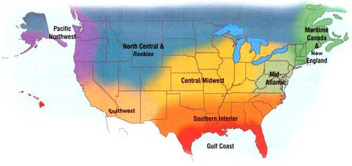

The leaves are falling and its a great time to build compost piles. Pull mulch and grass away from fruit-tree trunks and install mouse barriers made of 2- to 3-foot-high hardware cloth or screen, or use plastic tree guards. Extend the hardy greens season as much as four weeks by placing a stone mulch around individual plants or along plant rows. The stones warm slowly throughout the day, then radiate absorbed heat at night. Combine them with a cold frame or polyethylene tunnel for maximum effect. To overwinter kale, cover with a double layer of plastic. Pull back the plastic (and snow) in March and harvest tender leafy shoots and flower heads into June. 'Russian White' kale produces more leaves while `Russian Red' gives beautiful purple-stemmed shoots.
Prepare for the first frost-often about mid-October. Move small lettuces, celery and greens to cold frames for winter harvesting. Pull beets, and protect carrots and bigger plants with row cover-your carrots will be the sweetest you've ever tasted around Christmas. Start lettuce, arugula and Chinese greens (including tatsoi and mizuna) by mid-October in cold frames (for late winter harvest) and in the ground (for early spring harvest). 'Winter Density' and 'Speckled' are excellent lettuces to plant now. Kale, mustard and turnips can be sown as edible winter cover crops that also can feed chickens or grazing animals in late winter. Plant garlic and multiplier onions a few weeks after the first frost. Thin strawberries and establish a new bed. Now is a great time to start asparagus and artichokes from seed in a cold frame.
Recall what you liked from the past season and start planning next year's garden. Sow hardy greens for winter eating and cover warm season crops when frost threatens. Dig tender flower bulbs and store them for next season. Plant tulips and other spring-blooming bulbs and dream of the warm spring sun. Many of the flowers you have grown over the summer will provide dried seeds for tasty winter treats for birds - feathered friends especially love coneflowers left to dry on the plant. Plant cover crops and renew mulches. Take time for some indoor gardening activities with your children, such as preparing your favorite amaryllis bulbs-kids will marvel at how quickly the plants develop.
Early in this season heat stress is a factor that causes stunting or poor germination. Try lightweight row covers to protect sensitive plants like broccoli, cauliflower and lettuce. Also use covers over seeded crops like carrots and onions to ensure constant moisture until seeds germinate. Be sure to remove the covers or suspend them, Quonset-style, after the seedlings emerge. Set out transplants of celery, cabbage (and relatives like broccoli and cauliflower), lettuce and Chinese cabbage. Sow beets, carrots, mustards, turnips, radishes, short-day onions (like `1015' and 'Grano'), garlic, bunching onions and spinach. Cool-season herbs including dill, fennel, parsley, cilantro, oregano, arugula, thyme and savory also can be planted. Fall is strawberry planting time in this region. Set out new fruit trees as soon as they are available. Pansies, sweet peas, snapdragons, dianthus and columbines love Gulf Coast winters!
Lettuce, greens and cabbage often can be harvested until the snow arrives. Carrots become their sweetest with the cool temperatures. To extend their harvest through the winter, cover the rows with mulch. Take advantage of beautiful autumn weather to clean your garden. Turn under decomposing plants that are not disease-ridden and plant cover crops. Leave some seed heads, like those found on sunflowers or ornamental grasses, for animals to eat during winter. Tall plants or garden structures left in place can create an interesting scene when covered by snow. Before winter arrives, be sure that greenhouses, cold frames and any other outdoor structures are secure enough to survive wind and blowing snow.
Days get shorter quickly in northern regions this time of year, and plant growth slows. Place wire hoops and a fabric or plastic covering over hardy greens to extend the harvest season. Bring tomatoes inside to ripen, and cull any rotting ones. Gather winter squash to cure at room temperature, then store in a cool spot inside. Dig root crops and store in the cellar. Protect fruit-tree trunks from mice and voles by wrapping the trunks with wire mesh as high as the usual snow level. Do a final garden cleanup and mulch herbs and perennials with a thick layer of leaves or straw. Try transplanting a few flowers and herbs, or a pepper plant, into windowsill pots to keep summer around a little longer.
As we move into the shorter days of fall, cool-weather crops gain sweetness and flavor-their natural antifreeze is sugar. Fall is time to plant garlic and shallots. In general, hard neck garlic varieties perform better in the Pacific Northwest than the softnecks. Turn one of your beds into a hoop tunnel and sow peas, salad greens and spinach for next spring. Harvest winter lettuce with a pair of scissors and you'll have many salads. Clipped lettuce not only produces choice tender leaves but is hardier than full-size heads. And don't forget: If a patch of ground is not being used for the winter garden, plant a cover crop there. (See "The Easiest Cover Crops" )
The entire Southwest, with the exception of northern California, has been experiencing at least two years of drought. Do everything you can to conserve water, including letting that European turf-grass lawn die and replacing it with native vegetation. Check with your local native plant society for suggestions and lists of local native plant nurseries. A thick mulch helps keep soil moist with minimum water use as you start winter crops of peas, lettuce, cabbage, carrots, radishes, garlic, artichokes, broccoli and cauliflower. Just pull back the mulch to expose the soil and sow the seed.
|
 |
|
|